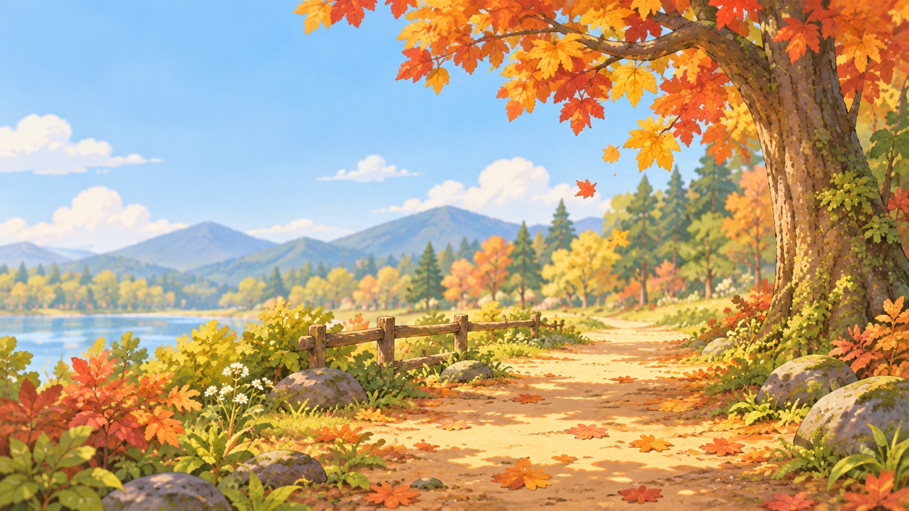
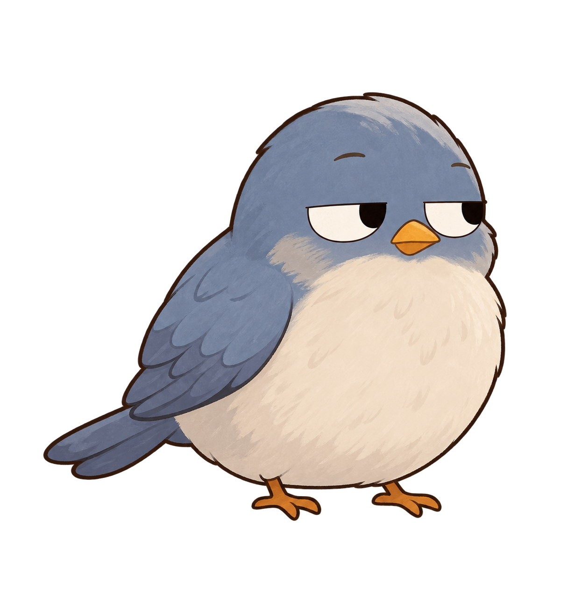
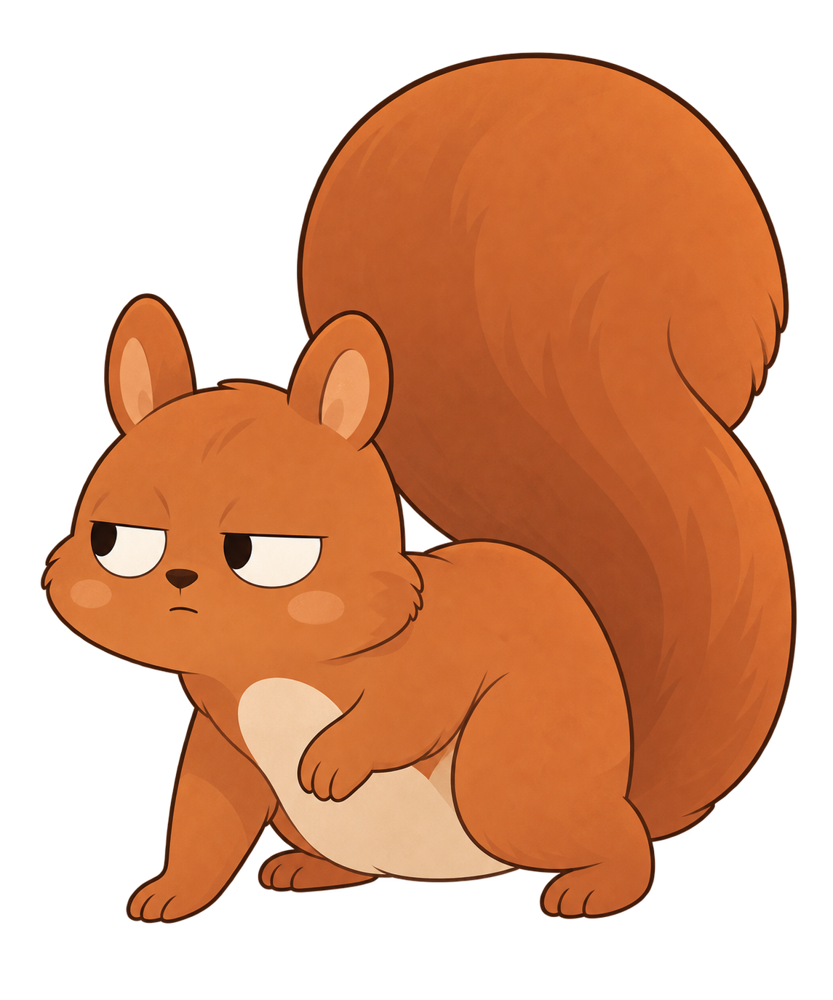
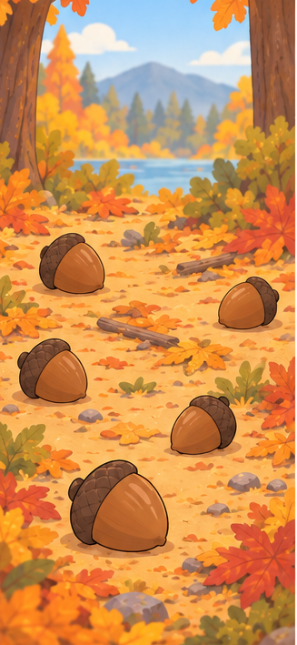
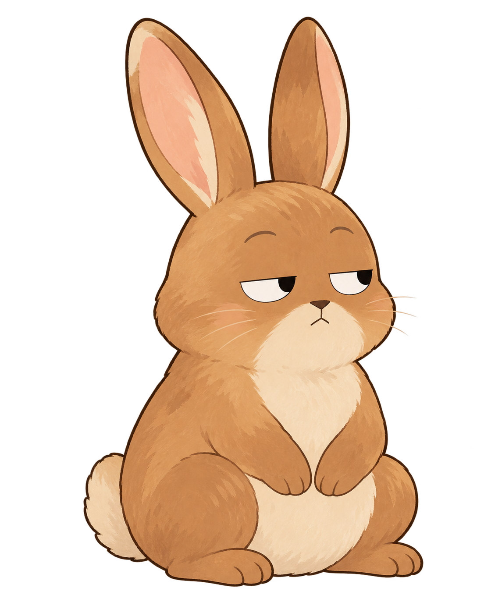
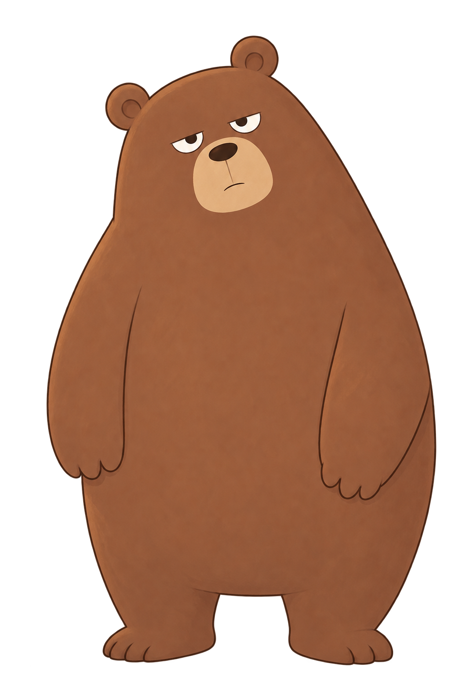
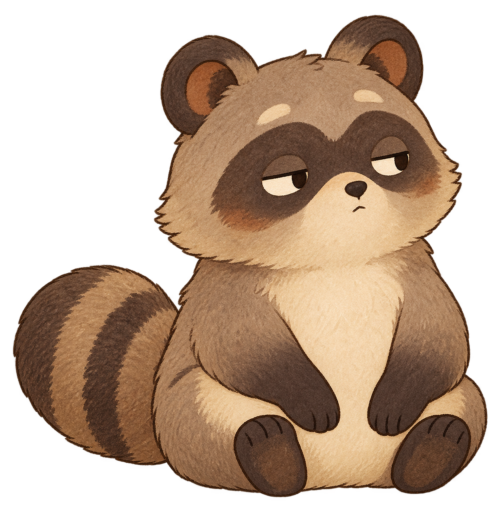
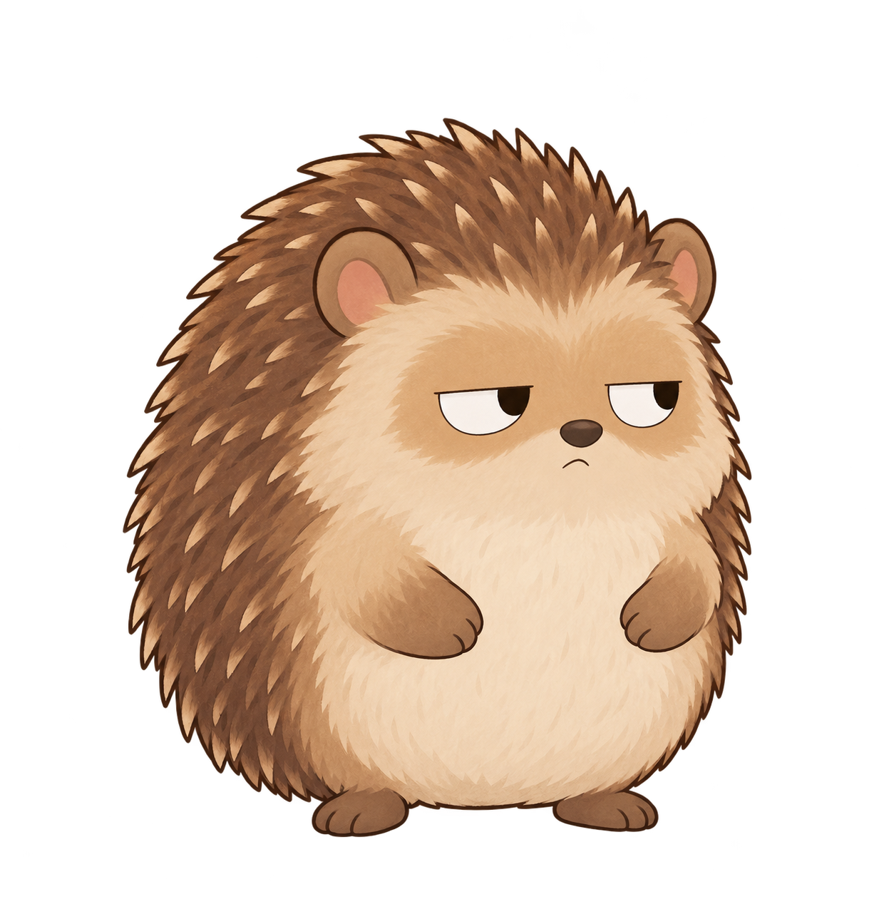
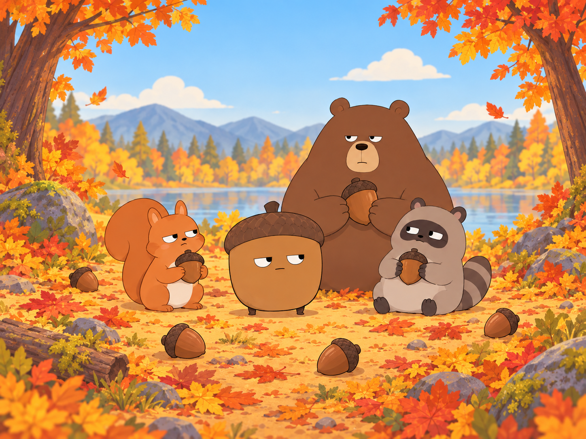
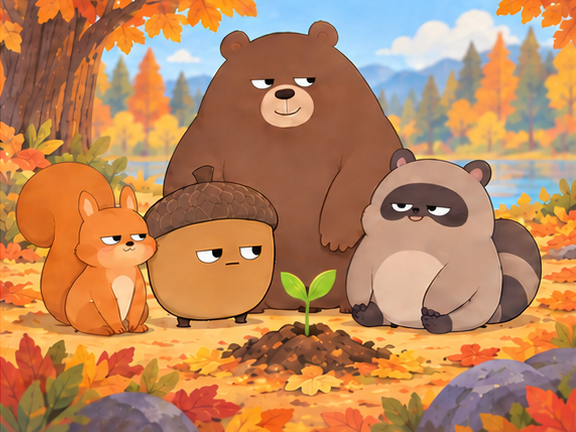

森へ出かける
マスターどんぐりと、今日の探検へ。



森のどこかで、みんなが見てる。01 — みつける
落ち葉のそば、木の根元。いつもの道にも、まだ気づいていないものがある。見つけたら、まずは一枚撮ってみよう。


0102 — かぞえる
むずかしい操作はいりません。撮って、確かめて、マスターどんぐりに預けよう。
マスターどんぐりと、今日の探検へ。
見つけたどんぐりを画面におさめる。

数を確かめたら、見つけた場所の近くへ。
03 — なかまに会う
少し眠そうなクマ。どんぐりを気にしているリス。木の陰から見ているタヌキ。みんな、森の中で自分の一日を過ごしています。



それぞれの場所から、そっと見守ってる。04 — 森を見る
木の根元や落ち葉の下。どんぐりがあった場所には、森の時間が流れています。季節が変わると、出会う景色や仲間も少しずつ変わります。

急がないで歩くと、見えるものが増えてくる。
05 — 元の場所へ
どんぐりは、森の仲間たちの食べものや、次の芽吹きにつながるもの。見つけた場所の近くへ戻してあげよう。
公園の自然を、みんなで大切に。
